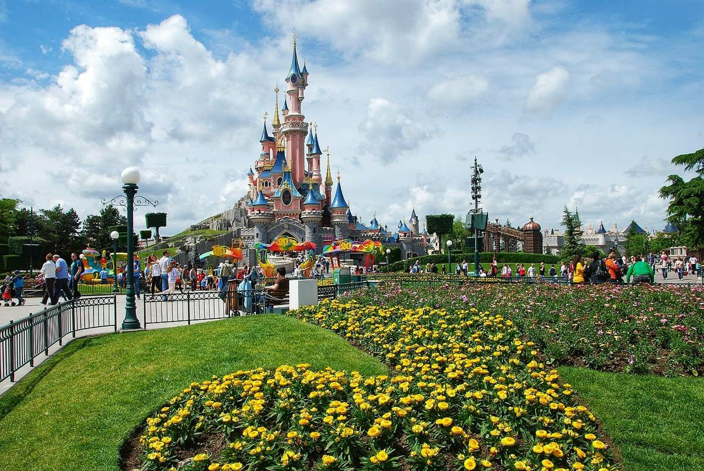

Descoperă frumusețea Europei!! De la orașe istorice la peisaje naturale impresionante. Europa oferă experiențe de neuitat pentru orice calator.
| Țara | Oraș | Atracție | Tip |
| Franța | Paris | Turnul Eiffel | Urban |
| Italia | Roma | Colosseum | Istoric |
| Spania | Barcelona | Sagrada Familia | Arhitectură |
| Elveția | Zermatt | Alpii | Natural |

